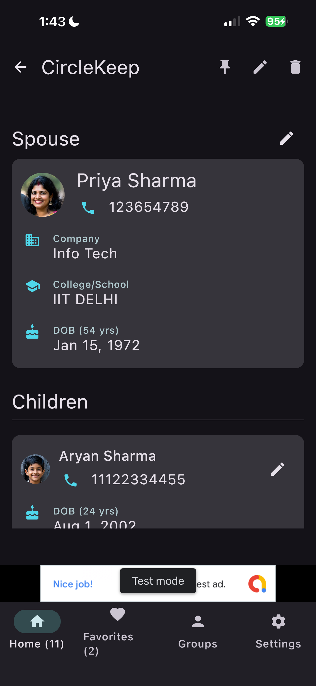
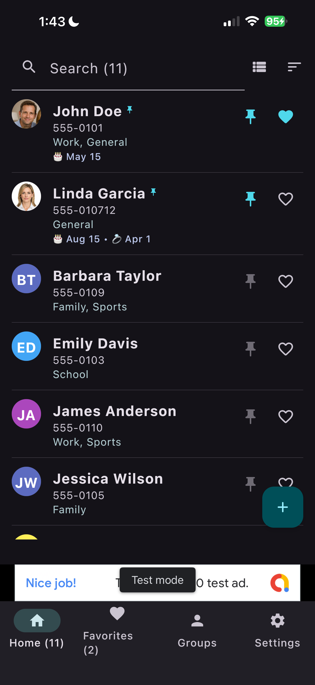
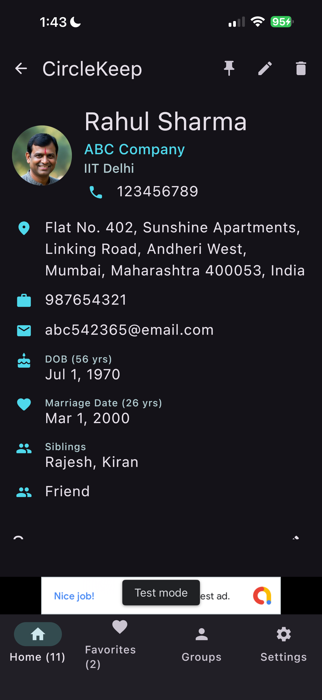

App Experience




CircleKeep is more than just a contact list—it’s a dedicated space to organize your personal connections, track family relationships, and remember the milestones that keep you connected to the people who matter.
In a world where connections are easily lost in a cluttered phone book, CircleKeep helps you focus on your "inner circle." Whether it’s remembering a friend’s child’s name, a partner’s birthday, or a marriage anniversary, CircleKeep ensures you have the information you need at your fingertips.
Go beyond just a phone number. Store addresses, multiple emails, company details, school/college info, and even pet names for every contact in your circle.
Uniquely designed to track entire households. Add partners and children to any contact record, complete with their own specific details, birthdays, and phone numbers.
Never miss a birthday or anniversary again. CircleKeep calculates ages and years automatically and highlights upcoming events for your circle.
Organize your circle into custom groups like Family, Work, School, or Sports. Use powerful search and pinning features to keep your most important contacts at the top.
Import existing contacts directly from your phone to get started in seconds. We’ll help you bridge the gap between generic contacts and your personal circle.
Your data belongs to you. CircleKeep includes easy-to-use export and import tools, allowing you to back up your entire database to a JSON file for safe keeping.
Enjoy a clean, Material 3 design that adapts to your style. With full support for Light and Dark modes, and system-adaptive themes, CircleKeep looks great on any device.
Start building a better inner circle today with CircleKeep—keeping you connected to what matters.


